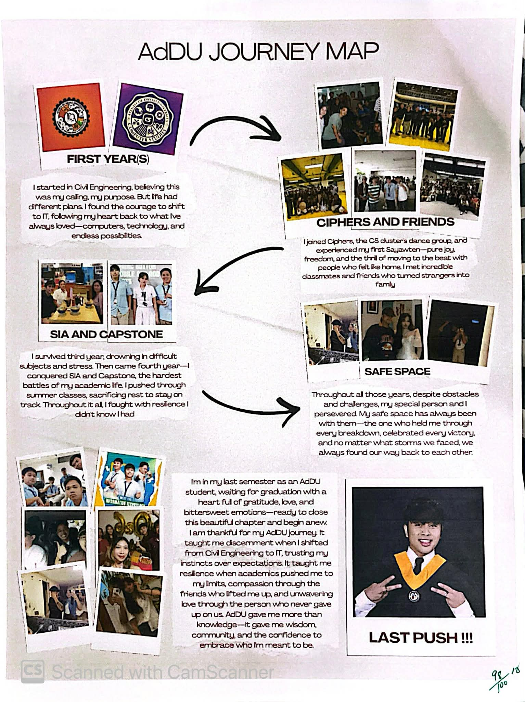

Joshua Sam D. Suarez
Ateneo de Davao University
BS IT–AA Senior Integration Program
"For I know the plans I have for you, declares the Lord, plans to prosper you and not to harm you, to give you hope and a future."
— Jeremiah 29:11
Ateneo de Davao University
BS IT–AA Senior Integration Program
"For I know the plans I have for you, declares the Lord, plans to prosper you and not to harm you, to give you hope and a future."
— Jeremiah 29:11
Reflection
Senior Integration Program · 2026
Prayer & Ten-to-Twenty Year Vision
Prayer for My Future Self
Lord, I come before You not with a polished life, but with an honest heart. You already know who I am — the doubts I carry, the dreams I'm afraid to say out loud, and the quiet hope that refuses to let me give up. So I bring all of that to You.
I pray for the person I am still becoming. Give me the wisdom to make decisions I won't regret, and the courage to take steps forward even when the path ahead isn't clear. Teach me to be patient with myself — to understand that growth takes time, and that slow progress is still progress.
I pray for the discipline to sharpen my craft as a developer, to keep learning even when it's hard, and to bring excellence to everything I build. Help me to work not just for a paycheck, but with a sense of purpose.
I pray for my family. You know how much I want to be there for them — to ease their burdens, to give them a better life, to make them proud. Give me the strength to carry that responsibility without letting it crush me, and remind me that caring for them starts with caring for myself.
I pray for my heart. Guard it from bitterness, from comparison, and from the kind of fear that keeps me standing still. Let me be someone who celebrates others' success while still believing that mine is possible too.
And in the years ahead — in the milestones I reach and the ones I miss, in the seasons of abundance and the ones that stretch me thin — let me never forget where my help comes from. Let me remain grateful, humble, and anchored in You.
Not perfect. Just purposeful. Not fearless. Just faithful. — Amen.
10–20 Year Passion Plan
Years 1 – 3
Secure a full-time role as a Junior Web/Software Developer. Build proficiency in React, Node.js, databases, and REST APIs. Complete real-world projects, earn a relevant certification, and begin building a 3–6 month emergency fund while contributing to family expenses.
Years 4 – 7
Advance to Mid-level or Senior Developer. Develop expertise in full-stack SaaS, automation, or cloud. Begin mentoring juniors, explore freelance work to diversify income, and start saving toward property ownership.
Years 8 – 12
Reach Senior/Lead Developer or Engineering Manager. Launch a side project generating supplementary income. Own a home for my family, build a personal brand in tech, and establish at least one stream of passive income.
Years 13 – 20
Transition into entrepreneurship, consulting, or founding a tech venture. Build or contribute to a business that creates jobs. Achieve genuine financial freedom and leave something behind that outlasts my career.
This Passion Plan is my commitment to myself, to my family, and to God — that I will not drift through life but walk through it with intention. One step at a time. One day at a time. Forward.

Who I Am Becoming
I am becoming someone who builds not just software, but solutions that genuinely matter. A developer sharpening his craft, a son working toward the ability to care for the people who sacrificed for him, and a young man learning, day by day, what it truly means to live with intention.
What Drives Me
I am driven by the desire to build a career, a stable home, and a future I can be proud of. I want to prove to myself that consistency and hard work can transform where I come from into where I'm going. Every line of code, every problem solved is a small step toward a life where I genuinely thrive.
The Values I Live By
Integrity — Doing what is right even when no one is watching.
Growth — Treating every failure as a lesson and every challenge as an opportunity.
Family — The reason behind every goal I pursue.
Excellence — Not perfection, but always giving my honest best.
Faith — Trusting that God's plan is greater than what I can currently see.
The Impact I Hope to Make
I hope to build technology that solves real problems for real people — through the companies I work for, the projects I take on, and the businesses I eventually build. Beyond my career, I want to be someone my family can lean on and someone my community can look up to. My impact starts small and close to home, and grows from there.